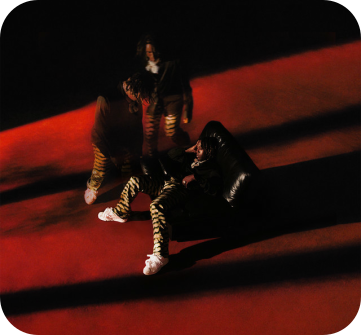

Mais do Artista
Ano de Lançamento
2021
Compositor(a)
Travis Scott & Don Toliever
Letra
It's crazy You couldn't get any better, baby (ooh, ooh) Your lips taste like candy, can you tell? (Ooh, ooh, ooh) You're my baby (yeah), so impatient, when I'm gone, you waitin' Please, don't make me think of it like a game with a defect (yeah) You talk to me dirty, I'm talkin' back like a reflex (oh-oh, oh-oh, oh-oh, oh-oh) I know you love to play games (ooh, ooh, ooh-ooh), but it ain't no recess Around my town, they know my name (ah, ah, ah), I put it on Jesus I booked you a plane, to come my way, I gotta meet ya Starrin' in my musical without no feature Do me a favor (do me a favor), and call a nigga back (a nigga) I can't contain ya (I can't cont–), 'cause you been in your bag (you been in your) And I'll be your savior (I'll be your), girl, I'll make sure that you're bad (ooh, ooh) You ain't different (you ain't), I'll make sure you're throwin' back I (I), baby, don't lie (ooh, ooh), you ain't doin' alright You ain't different, you, ooh-ooh, ooh You ain't different, think of throwin' back, back Girl, you're throwing back (woo) You ain't doin' alright You ain't different, you, ooh-ooh Before I break up out this place, take a eighth and levitate A lil brown-skin hurricane, a bae-bae, bring the wave TBA for the time and the space, lock the day Know you like to coordinate, know it's good, see the hood in your face Know you like to ride the wood, wanna see you do it like we in the H Body good, body great, below the waist, real estate Know you like to ride the wood, wanna see you do it like we in the H Please don't make me think of it like it came with a defect (defect, defect, defect, defect) You talk to me dirty, I'm talkin' back like a reflex (talkin' back like a, like a, talkin' back like a, like a) I know you love to play games, but it ain't no recess (recess, recess, recess, recess) Around my town, they knowin' my name, I put it on Jesus (Jesus, Jesus, Jesus, Jesus)

YOU (feat. Travis Scott)
Travis Scott